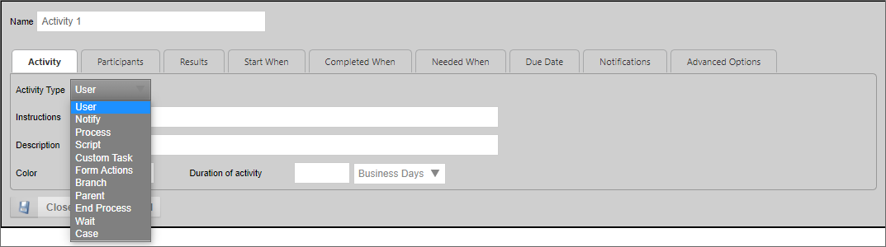
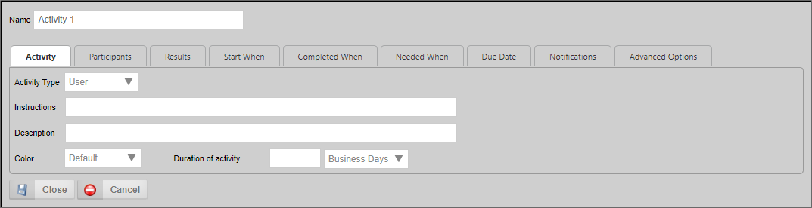
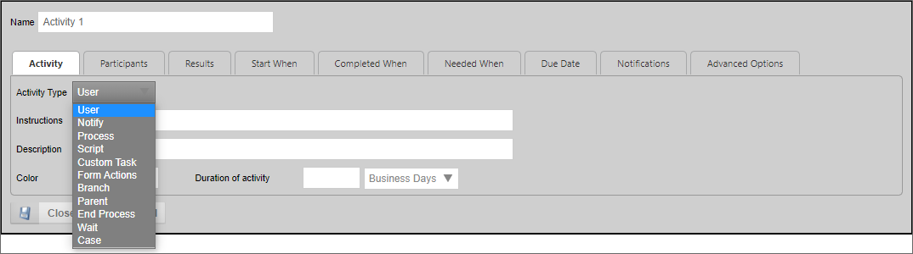
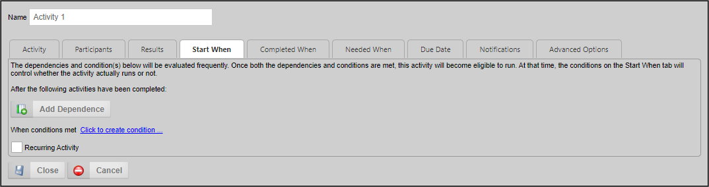
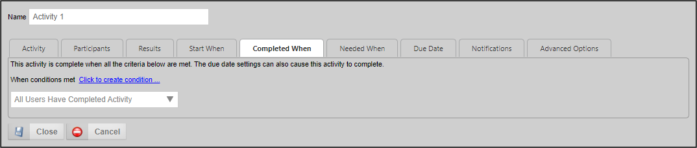
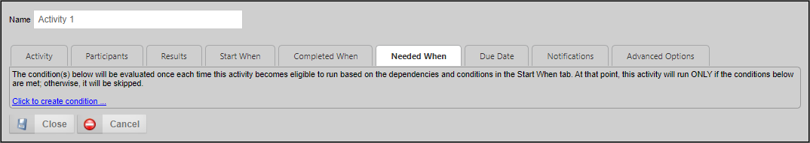
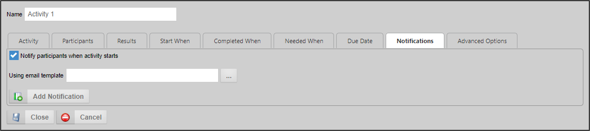
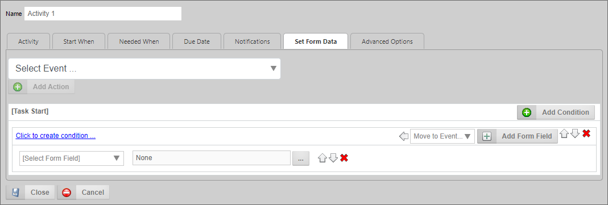

icon to display the Properties dialog box for the Activity.
icon to display the Properties dialog box for the Activity.A Process Timeline is made up of a series of activities. Each Activity in a Process Timeline identifies the task to be performed and the users, if any, that should perform the task. Activities can be easily added, moved and deleted from a Process Timeline Definition.
Each Timeline Activity defines a set of functions or actions that can be performed by that Activity. The function that the Activity will perform is determined by the Activity Type property that appears on the Activity tab for the Timeline Activity.

Please refer to the Process Timeline Activity Types topic for specific information about specific Activity Type, and how to configure them.
To configure an Activity in the Process Timeline, double click on the Activity or click on the Properties icon to display the Properties dialog box for the Activity.
At the top of the Properties dialog box there's a Name property, which identifies the Activity in the Process Director user interface. The value set in this property will be displayed in the Process Director UI for all references to the Activity. For instance, it is used to display what Activity in the Process Timeline is currently running. The Name is also displayed on the Routing Slip to show when the Activity ran.
The Properties dialog box is presented in a tabbed interface, with each tab grouping similar properties together. The number of tabs displayed to configure an Activity will depend on the Activity Type. Most Activity Types have specific configuration tabs that only apply to that Activity Type. For instance, User activities have a Participants tab, which enables you to specify the users who must be assigned a task to complete the Activity. A Notify Activity, on the other hand, only sends email notifications and doesn't assign any tasks, so doesn't have a Participants tab.
There are, however, several configuration tabs that are common to all Timeline activities.

The Activity tab enables you to specify the Activity's general settings, the most important of which is the Activity Type.
This dropdown contains type of Activity to be used for the current Activity.

The default Activity Type is the User Activity. With the User Activity selected, the second tab on the options dialog will be Participants. Selecting a different Activity Type will change the second tab to a different option setting, and some Activity Types will remove some of the tabs completely, as they contain inapplicable settings for that type of Activity.
This field contains an optional description of this Activity. This can be used by the Process Timeline builder to document what this Activity is used for and why it is here. The end-users won't see this field.
This contains instructions for the users telling them how to perform the task assigned to them. This information will be contained in the email sent to the users, it will be displayed on their Task List, and is displayed in the Process Timeline Package.
This field contains an optional color of this Activity, which, when set, will change the color of the bar that displays in the Gantt chart for this Activity. The use of color can be helpful to make different sections of the Gantt chart, or individual activities, more visually distinct.
This field contains an option to set the duration of the Activity. This property consists of a text box to enter a number of time increments, and a dropdown to specify the increments to measure. So, if you wanted an Activity to last for two weeks, you'd enter "2" in the text box, then select "Weeks" from the dropdown control.

The settings on this tab determine when the Activity will run by specifying its dependencies, i.e. what Activity or activities must complete before the Activity starts. The Activity’s start time can depend on the state of other activities, or some evaluable condition. Activity dependencies can be added via the Add Dependency button, and the dependence specified via a dropdown. Conditions that make the Activity eligible to start can be configured via the Condition Builder by clicking on the Click to create condition... link.
Clicking the Recurring Activity check box makes an Activity a recurring Activity, and enables you to configure the time interval at which the Activity repeats. The Activity won't recur if the box is unchecked. This option is relevant primarily for activities in which you have set a Start When condition. When an Activity is set as a recurring Activity, the Activity, once completed, will automatically restart again at the time interval specified, until the Start When condition is no longer met.
 If you make an Activity a recurring Activity without a Start When condition, the Activity will continue to restart indefinitely, until the system's internal loop checks cancel the recurrence as an indefinite loop.
If you make an Activity a recurring Activity without a Start When condition, the Activity will continue to restart indefinitely, until the system's internal loop checks cancel the recurrence as an indefinite loop.
To set an Activity dependence, click on the Add Dependence button. A dropdown list will display of all the activities that are available in the Process Timeline. From the dropdown list, you can select the Activity which must end before this Activity will be allowed to start. You can add more than one dependence, and the Activity won't start until all of the selected activities have completed.
If an Activity has a start condition that isn't met and the Activity Required to Complete Parent checkbox is checked on the Advanced Options tab, the parent Activity will remain running indefinitely. The parent Activity can only be completed when this Activity completes.

This tab enables you to indicate when the Activity is considered complete. The dropdown determines whether the Activity is completed when all users have completed the Activity or when the first user has completed the Activity. Additionally, you can set conditions to complete the Activity independently, by clicking the Click to create condition... link, and using the Condition Builder to set the desired conditions. These conditions are known as Completed When conditions.
By default, a User Activity completes when all users have completed the Activity manually. If you wish to set a Completed When condition, you must set the Completed When dropdown to "When Any Result Condition Is Met". Additionally, you must set a default result on the Results tab for the Activity to complete the Activity, and/or to prevent the Activity from going into an error state.
Another option on the dropdown, "All Users Complete or Result Number Met", enables you to immediately end a task automatically—even if the task requires all users to complete—by specifying certain results to override that and force the Activity to be completed. For example, you may have 3 results on an Activity and normally want all users to complete their task, however you may want one result to immediately end the Activity when a user selects it using the "Number of Users" set to 1.

In most cases, we expect every Activity in a Process Timeline to run every time it is eligible to do so, and in those cases, we would ignore this tab completely. There are, however, some cases when you do not want an Activity to run unless a specific condition is met. This tab enables you to define conditions that specify when the Activity is needed. Once an Activity's dependence requirements have been met and the Activity is eligible to run, the system will evaluate any conditions on this tab. If the conditions aren't met, the Activity will be skipped, and the next Activity in the Process Timeline will be started. If the conditions are met, or there are no conditions configured on this tab, the Activity will run normally. The conditions on this tab are known as Needed When conditions.
Conditions for enabling the Activity can be configured using the Condition Builder by clicking the Click to create condition... link.

Each Activity in the Process Timeline can have unique time limit/due date options. The due date can be calculated in three ways.
This property specifies how to calculate a due date for this Activity. The Activity due date is optional. If an Activity doesn't complete by the due date specified it can automatically transition to the next Activity in the Process Timeline. The due date can also be used to prioritize items in a user’s Task List.
|
Option |
Result |
|---|---|
|
No Calculated Due Date |
A Due Date isn't calculated. |
|
Calculated from Actual Activity Start |
The due date is calculated from the date the Activity was actually started. |
|
Calculated from Configured Activity Start |
The due date is calculated from the date the Activity was configured to start in the Timeline Definition, rather than when it actually started. |
|
Calculated from minimum of Actual or Configured Activity Start |
The due date is calculated from either the date the Activity was configured to start in the Timeline Definition, or when it actually started, whichever is first. |
Enables you to specify a due date using a Date Picker control on the Form used for the process.
The due date will be set from the specified system variable.
If the time limit (due date) passes before this Activity is complete these are the actions that can be taken. This dropdown will display different items in the User Activity type and the Wait Activity type.
 Process Director runs as a virtual directory in IIS and processes all time related events like due dates only when Activity is present on the system (e.g. a login occurs). To force this Activity checking more often, please refer to the Activity checking topic in the System Administrator's Guide.
Process Director runs as a virtual directory in IIS and processes all time related events like due dates only when Activity is present on the system (e.g. a login occurs). To force this Activity checking more often, please refer to the Activity checking topic in the System Administrator's Guide.

Each Activity in the Process Timeline can have unique notification options.
This setting is enabled by default, and the Process Timeline will send a notification to all users that have been assigned from the Participants tab.
This button enables you to add and select a user or users who should be sent a notification by this Timeline Activity, other than the participants configured for the Activity (Participants are notified automatically via the Notify Participants... property above). Once you have made your selection you'll have to select from the Choose Notification Time property.

This property enables you to specify when the notification should be sent to the additional user. Your options are:

This property enables you to specify the notification type that should be sent. Please note that notifications for participants in the Activity are intended for notifications you'd like to send in addition to the task assignment notification that is automatically sent via the Notify Participants... property. Your options are:
All Active Users in Step: Send a notification to all users who have yet to complete a user step.
All Users in Step: Notify all the users involved in this User step.
Users: Specific users to notify.
Groups: Notify all users in a specific group.
Business Rule Value: Notify the user result of a Business Rule.
Workflow Initiator: Notify the initiator of this Workflow instance.
From Form Field: Notify a User specified by a field on the container Form.
External Users: Send a notification to an email address you can specify in the provided text box.
This is an optional email template to use when sending email notifications to users in this Activity. If this isn't specified, the default email template for the Process Timeline will be used. If a default email template isn't specified, the notification will use the email template that is shipped with Process Director. For more information on email templates refer to the section named Email Templates in this guide.

This tab only appears on Timeline activities when you have used the Set Form Data section of the Timeline definition to create a Set Form Data action. Once you have done so, this tab will appear on all Timeline Activity types, enabling you to configure Set Form Data actions on any Activity. If you have not configured at least one Set Form Data action on the Timeline definition, this tab won't appear for any Timeline Activity.
This tab is used to set data in the Process Timeline's default Form when the Activity begins or ends.
Depending on the Activity Type, several different options will be available on this tab. In most cases, Timeline activities have a single property on this tab, Activity is required to complete parent. This property is enabled by default, and requires this Activity to complete before its parent Activity, if any can complete. Occasionally, and Activity that isn't part of the critical path of the process might have this property unchecked, so that a lengthy Activity doesn't hold up the rest of the Process Timeline.
Please see the topics for each individual Activity Type for more detailed information about this tab's settings.